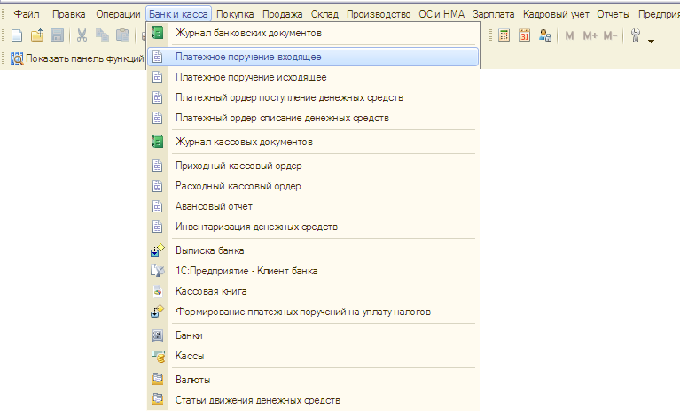
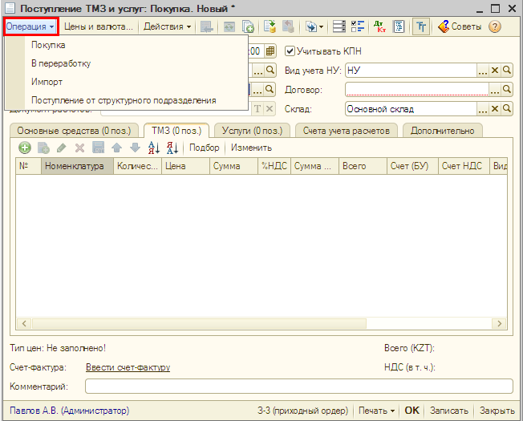
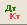

Основным способом регистрации хозяйственных операций (покупка и продажа товаров, оплата поставщику, списание материалов и т.д.) в «1С:Бухгалтерии 8 для Казахстана» является ввод документов. Документы доступны из главного меню программы, где они сгруппированы по видам деятельности предприятия и разделам учета: документы для учета торговой деятельности и производства доступны из меню Покупка, Продажа, Склад и Производство, документы для учета операций с денежными средствами доступны из меню Банк и касса и т.д.

Один документ может быть предназначен для регистрации нескольких видов хозяйственных операций. Разным операциям соответствуют разные наборы вводимых данных и разные правила проведения документа. Поэтому вид хозяйственной операции следует устанавливать перед началом заполнения документа кнопкой Операция командной панели формы документа. Например, документ Поступление ТМЗ и услуг предназначен для регистрации нескольких видов хозяйственных операций: покупка, в переработку, импорт, поступление от структурного подразделения.

Документ можно записать в информационную базу (кнопка Записать), провести(кнопка ), провести и закрыть(кнопка ОК).
| ПРИМЕЧАНИЕ Запись документа без проведения означает, что документ подготовлен предварительно для регистрации хозяйственных операций в будущем. При проведении документа формируются проводки бухгалтерского и налогового учета — хозяйственная операция отражается в учете. |
Большинство документов «1С:Бухгалтерии 8 для Казахстана» при нажатии на кнопку ОК делают записи в различных учетных регистрах, например записывают проводки в журнал проводок. Эти записи называются «движениями» документа. Список учетных регистров, по которым документ делает движения, можно увидеть, нажав на кнопку  в командной панели формы документа (или списка документов).
Только что Вы научились отражать хозяйственные операции с помощью документов.
Из следующего раздела Вы узнаете, как вводить проводки вручную.